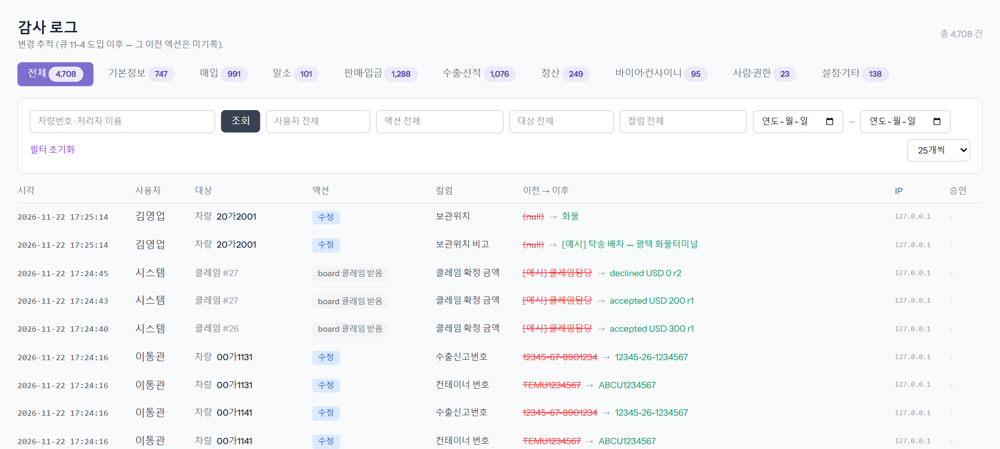
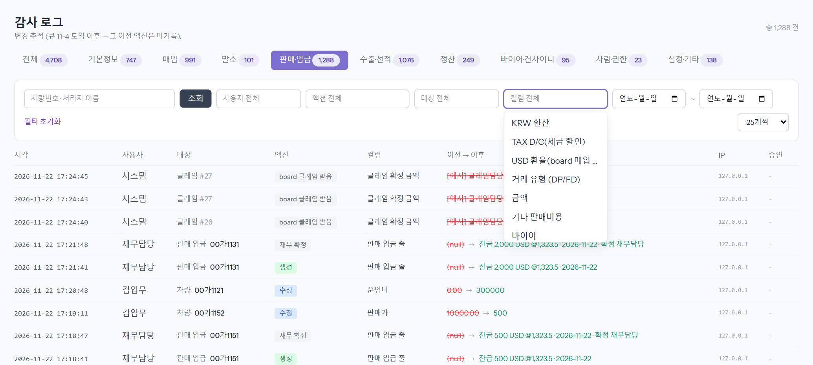
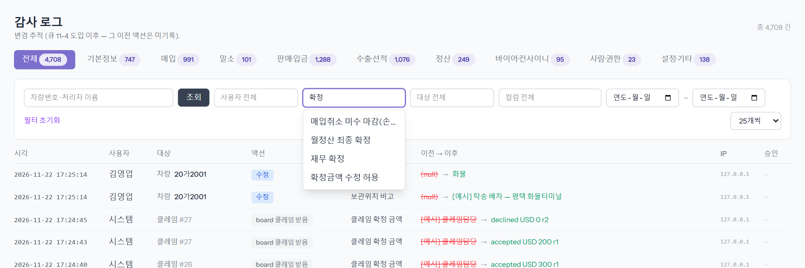
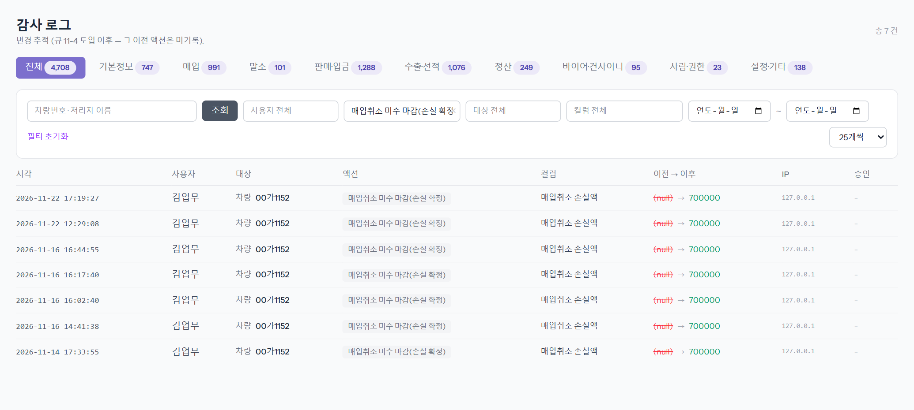
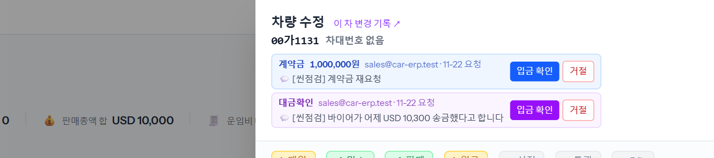

감사 로그는 누가 · 언제 · 무엇을 · 어떤 값에서 어떤 값으로 바꿨는지 남기는 기록입니다. 왼쪽 메뉴의 「로그」 묶음에 있는 「감사 로그」에서 열고, 관리 이상만 볼 수 있습니다.
칩은 「전체 · 기본정보 · 매입 · 말소 · 판매·입금 · 수출·선적 · 정산 · 바이어·컨사이니 · 사람·권한 · 설정·기타」입니다. 누르는 즉시 그 구역의 기록만 남고, 한 번 더 누르면 풀립니다. 칩 옆 숫자는 전체 기간의 건수입니다.

| 구역 | 들어 있는 기록 |
|---|---|
| 기본정보 | 차량 등록·삭제, 차량번호·제원·메모·담당자 |
| 매입 | 매입가·매도비·비용, 매입 지급 줄, 명세서 일괄 기입, 매입취소, board 매입 연동·요청 |
| 말소 | 말소 체크·말소일·말소등록증 |
| 판매·입금 | 판매가·환율·바이어, 판매 입금 줄, 채권 회수 줄, 적립금, 클레임 사용, 과입금 정리 |
| 수출·선적 | 반입지·신고서·선적일·ETA·B/L, 발송(EMS·DHL), 서류 일괄 업로드, 미입금 우회 승인 |
| 정산 | 정산 상태·2차 마감·회계 재조정, 월정산 결재·조정·지급보류·지급추가 |
| 바이어·컨사이니 | 바이어 정보·무담보 한도·B2B, 바이어 현금 입금·수수료 |
| 사람·권한 | 사용자·사내직원 정보, 휴가 위임, 담당자 승계 |
| 설정·기타 | 기능설정·락 관제, 통장 잔액, 카톡 자동화, 챗봇 질문 |
「컬럼 전체」 칸을 누르면 목록이 펼쳐집니다. 구역을 먼저 고르면 백여 개이던 목록이 그 구역 것만 남아 찾기 쉽습니다. 글자를 치면 그 글자가 든 이름만 남습니다.

네 칸 모두 이름을 치면서 고릅니다. 고르기만 해서는 목록이 바뀌지 않고, [조회]를 누르거나 Enter를 쳐야 걸립니다. 여러 칸을 한꺼번에 고른 뒤 한 번만 누르면 됩니다. 칸 오른쪽 ×를 누르면 「전체」로 돌아갑니다.


차량 관리에서 차를 열면 「차량 수정」 제목 옆에 「이 차 변경 기록 ↗」이 있습니다. 누르면 새 창에서 감사 로그가 그 차 번호로 걸러져 열립니다. 감사 로그를 볼 수 있는 사람(관리 이상)에게만 보입니다.
